Problem
Create a clould storage solution that meets the needs of students and working pofessionals and encourages intercative collaboration.
Solution
CloudDocs, a cloud storage appliction for working professionals that allows users to create, uplaod, organize and share. CloudDocs also features social media networking to encourage more collaboration beyond the cloud network.
Roles
- UX Design
- User Research
- Visual Deisgn
- Branding & Identity
Tools
- Figma
- Invision
- Draw.io
- Usability Hub
Deliverables
- User Surveys | Personas
- Competitive analysis
- Moodboard | User stories
- User flows | Wire frames
- Style Guide | Digital
- Prototype
Research & Discovery
User Research
The user reserach first step was to survey and specifically shortlist the user experiences and expectations with current cloud storage applications, utilizing google forms.

Key Findings
100% of respondents use cloud storage.
The top 3 applications used are:
- Google Drive 100%
- Dropbox 73.3%
- and Pinterest 46.7%
The number one pain point with current cloud storage application are that it is hard to find and organize files, folders and photos.
80% are interested in a cloud storage application for document collaboration.
Competitive Analysis
A SWOT table analysis was performed on Google Drive, Dropbox, and Mega.

Google Drive does storage and collaboration well but lacks in organization and has no social media collaboration.

Dropbox has good share files features but a low data limit for the free account make it a no-go for super users.

Mega has good file-sharing features designed to improve content control, but falls short in sharing options, and browser compatibility.
Content Strategy
Create a cloud storage application geared toward working professionals, that creates, stores and organize files. The app allows users to engage and collaborate with their professional and personal network.
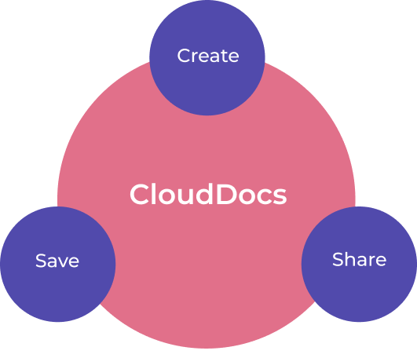Personas
Potential users were interviewed to gain an in depth understanding of their needs.


User Flows
Sketching and brainstorming out the user flow helped to figure out better process flows for the upload, create, view, and share content in the app.
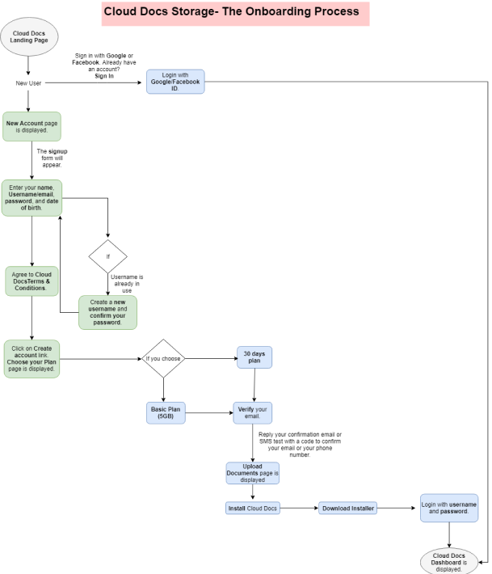Site Map
The site map provides information about how through the landing page the whole design of the product will flow.

User Stories
High priority user stories for all users:
- Signup
- Login
- Upload files
- Share content
- Create folders & documents
- Add links & images
- Copy and move content
Brand
Mind Mapping
After building the wireframes and having a better idea of user expectations, next step was Branding. The first step in branding is to map out your thought process of a story you want to tell though your product, and that’s what mind map conveys.

Logo
The name seemed apt and the cloud illustration blended well with it. Displayed are the initial sketches and the final logo.
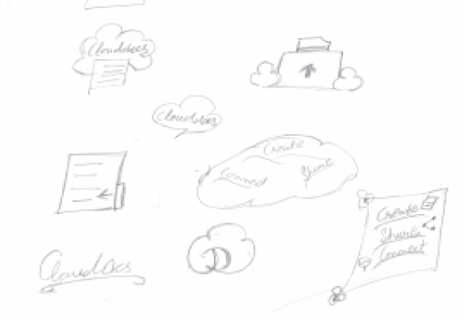

Prototype
Sketches + Lo-fi Wireframes
After building the wireframes and having a better idea of user expectations, next step was Branding. The first step in branding is to map out your thought process of a story you want to tell though your product, and that’s what mind map conveys.
 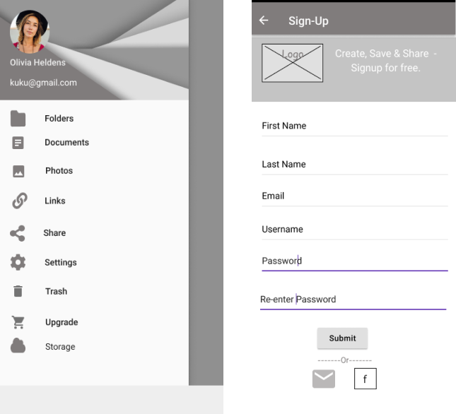
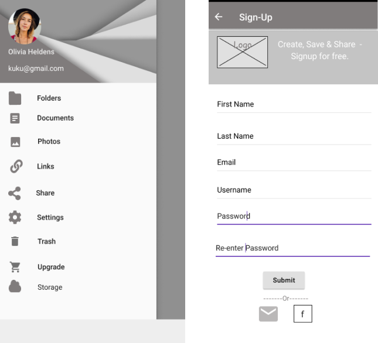
User Testing
Preference Test 1
Does the login screen work better with a lighter background or a dark one? Few were happy with the dark background, but few said to be cautious in using darker shade icons such as Facebook on a dark background.
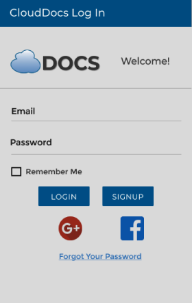 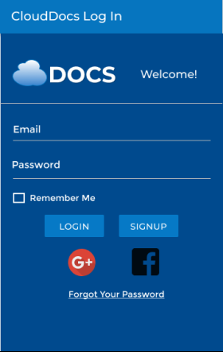Preference Test 2
On onboarding screen/welcome screen does use of a background image work better than a plain background? Using image to no image had a better response as it provided users with a background of cloud service app.

Actionable Prototypes
The usability review for the High-Fidelity Mockups came with few surprises and not too many changes. The three users felt very satisfied with the color choice, typeface and icons. There was no problem mentioned by the users as far as the flow of the various tasks in the app is concerned and they were able to perform the actionable tasks.
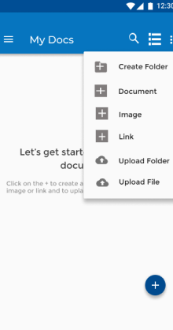 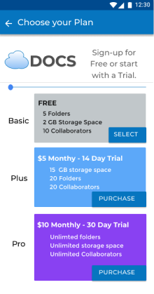 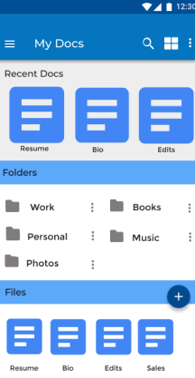 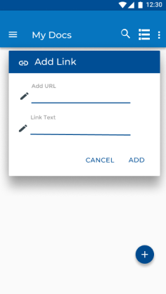 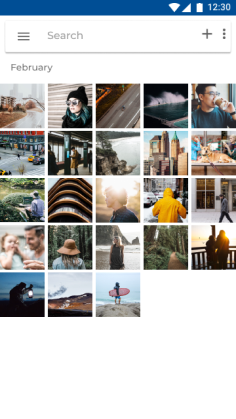Finishing Touches
- Updated the Change your plan screen and adjusted the display boxes so that info can be displayed in one screen.
- Updated the profile settings option from checkbox to radio button.
- Provided a Verify & Pay options right after choosing a plan to lead users to the Upgrade screens.
- Streamlined the upload process for folder and images.
- Redesigned pages and updated the add a link process.
Conclusion
CloudDocs in its current state is a minimally viable product. If the project continues, the following will be implemented:
- Additional upload space for photos and other media files.
- Adding more document types for storage.
- Direct access to better document editing software within the app.

There were two key revelations that I had during this project:
- First, minimalism is harder to appropriately apply than I initially thought, and thoughtful design is key. There is a danger when you are overly familiar with a product that you created to assume user knowledge, which can lead to confusion.
- The second is to seek feedback constantly and aggressively. Testing each process, each flow, each design decision, will help build the backbone of a great product.